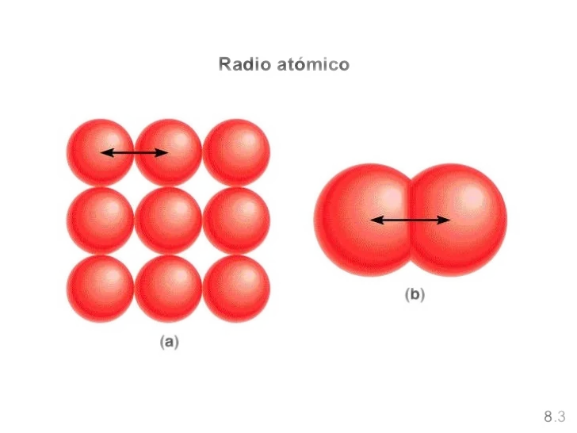

La "grandeza" de los átomos
La definición estricta de radio atómico carece de sentido físico desde la mecánica cuántica, ya que ésta presenta a los electrones como funciones de probabilidad (dentro de orbitales), pero por convenio se define como la mitad de la distancia entre los núcleos de dos átomos metálicos adyacentes o de una molécula diatómica.

El tamaño de un átomo viene condicionado por tres factores:
- El número de capas (nivel de energía = periodo) que posea. Los átomos que tengan más capas tendrán, lógicamente, un tamaño superior a aquellos otros que posean pocas capas.
- La carga efectiva (Z*) del núcleo. Un electrón situado a determinada distancia del núcleo estará más fuertemente atraído por éste (tendiendo a situarse a menor distancia) si la carga nuclear efectiva es grande.
- El número de electrones situado en la última capa o capa de valencia. La existencia de muchos electrones en la última capa hace que aumente el tamaño del átomo, ya que los electrones, al ser cargas negativas, se repelen y tienden a separarse unos de otros.